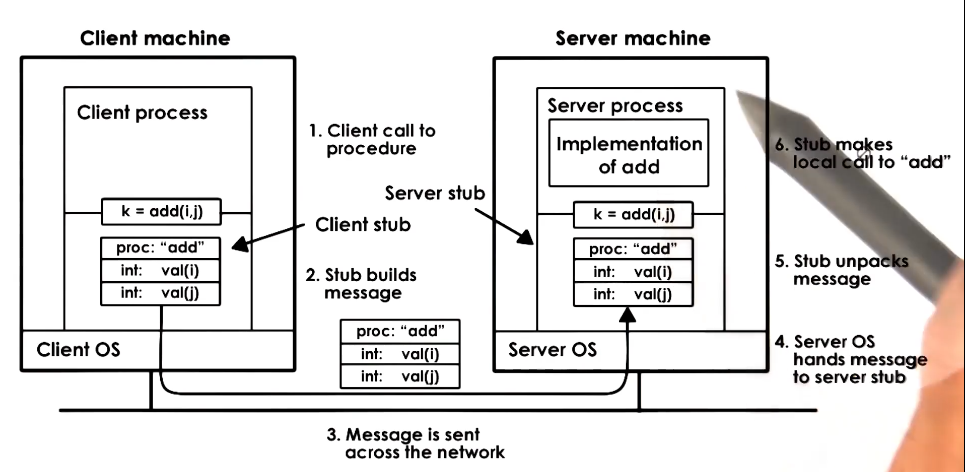
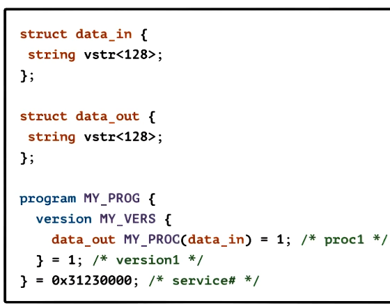
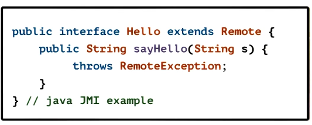
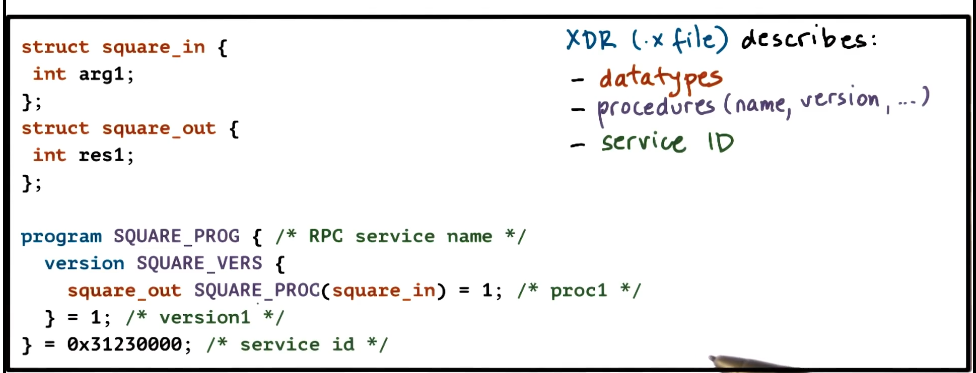
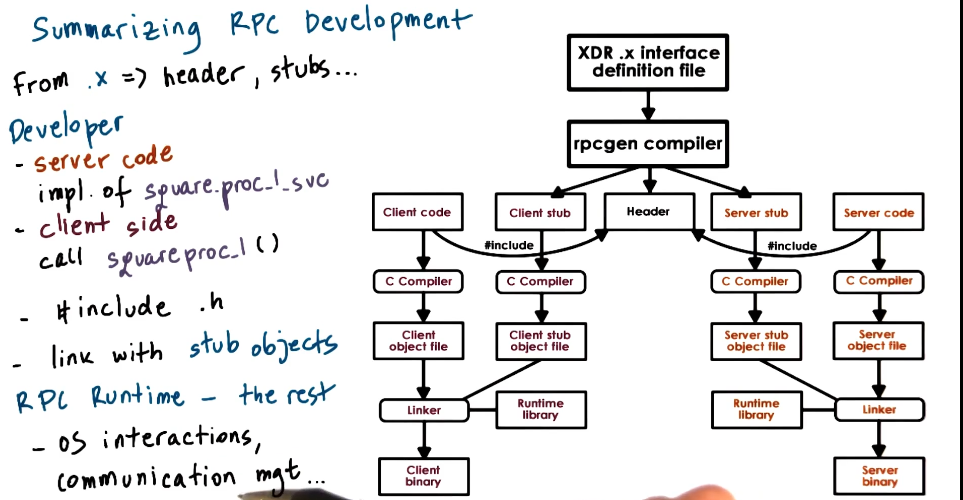
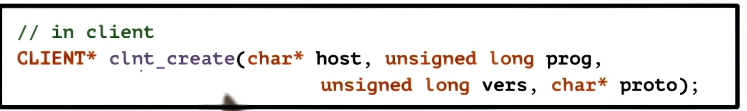
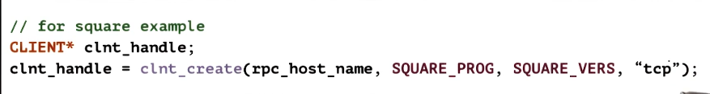
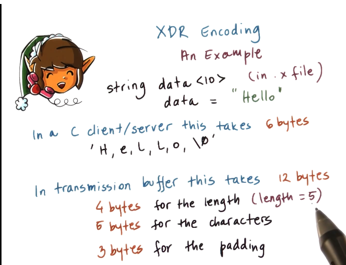
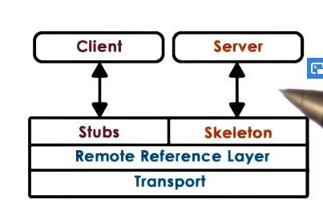

GIOS Lecture Notes - Part 4 Lesson 1 - Remote Procedure Calls
Remote Procedure Calls (RPC)
Why RPC?
- Example 1: Getfile App
- client-server
- create and init sockets
- allocate and populate buffers
- include ‘protocol’ information
- getfile, size, …
- copy data into buffers
- filename, file, …
- Example 2: ModImage App
- client-server
- client uploads images, then requests server to modify images
- steps required of this would be very similar to GetFile app
- one big difference is that protocol-related information would have to specify a lot, e.g. algorithm, parameters, etc
- It became obvious in the 80s that a lot of the boilerplate for distributed apps was being rewritten every time
- Common steps relates to remote IPC were then abstracted to Remote Procedure Calls (RPC)
Benefits of RPC
- RPC is intendended to simplify the development of cross-address space & cross-machine interactions
- Higher-level interface for data movement & communication
- Error handling
- Hiding complexities of cross-machine interaction
RPC Requirements
- Client/server interaction model
- server runs some complex service
- clients don’t need to be able to do the service thing, just issue requests to the server
- Procedure call interface
- synchronous call semantics
- this means client will make call to server, then block until call completes and returns. same as a procedure call locally.
- synchronous call semantics
- Type checking
- useful for error handling
- useful for packet bytes interpretation
- Cross-machine conversion
- e.g. big/little endian
- differences in representation of floating point numbers, negative numbers, etc
- one solution is to have the rpc runtime on both sides of the pipe agree on all the formats, for instance everything in the “network” format
- Higher-level Protocol
- incorporate higher level mechanisms, such as: access control, fault tolerance, …
- should support different transport protocols under the hood
Structure of RPC

- Client wants to do something, but doesn’t know how. Only knows what operations are available.
- Client sends desired operations to server, server performs them, server sends results back to client
- Client also needs things like server IP and such for RPC to handle the communication
Steps in RPC
- Register – server registers procedure, arg types, location, etc. All information needed for RPC use.
- Bind – client finds and binds to desired server.
- Call – client makes PRC call; control passed to stub, client code blocks
- Marshall – client stub “marshalls” arguments (serialize args into buffer)
- Send – client sends message to server using whatever transmission protocol the client and server agreed to during the binding process
- Receive – server receives message; passes message to server-stub; possible access control checks if needed
- Unmarshall – server stub unmarshalls args (extracts args & creates data structs)
- Actual call – server stub calls local procedure implementation
- Result – server performs operation and computes result of RPC operation
- Similar steps on return, in reverse
Interface Definition Language (IDL)
- The nice thing about RPC is that client and server don’t have to be developed together. Could be a different developer, different languages even.
- For that to work, there must be some agreement about what the server can do, and what arguments are required for the various operations.
- This is so the client can decide which server it should bind with
- Standardizing these agreements are important also so that the RPC library can automatically generate the stubs
- These needs are addressed by IDLs
Specifying an IDL
- An IDL is used to desribe the interface the server exports
- At minimum, must include procedure name, and arguments and their types. Similar to a function signature.
- Must also include a version number. If there are multiple servers that provide a procedure, this helps the client know which server has the most current version of that procedure. Also, version #s make it easier to efficiently do upgrades.
- RPC can use IDL that is:
- language-agnostic
- example given: XDR (eXternal Data Representation) from SunRPC
- different from any other language, is its own thing
- if you don’t have an IDL in the working language and have to learn one anyway, might as well learn a simple and universal one 
- example given: XDR (eXternal Data Representation) from SunRPC
- language-specific
- example given: Java in Java Remote Method Invocations (RMI)
- nice if you already know Java, don’t have to learn some new syntax 
- example given: Java in Java Remote Method Invocations (RMI)
- Only an interface, NOT IMPLEMENTATION!
- language-agnostic
Marshalling and Unmarshalling
- Variables of an RPC function are scattered in client address space
- Client passes variables to rpc function, those variables must be sent via a buffer to the server
- Buffer is automatically generated by marshalling code, known as serialization
- This is particularly useful when the function inputs are complex structures, such as arrays.
- Marshalling process must encode the data to an agreed-upon format, and this can get hairy if done manually
- Unmarshalling, as expected, takes the agreed upon encoding and uses it to extract the function variables from the buffer
Binding and Registry
- Binding
- Client determines
- Which server should it connect to?
- Based on things like service name, version number, etc.
- How will it connect to that server?
- Discover things like IP address, network protocol, etc.
- Which server should it connect to?
- Client determines
- Registry
- database of available services
- search for service name to find service and contact details
- Could be distributed
- Any RPC service could register here
- Could be machine-specific
- for services running on the same machine
- clients would have to know the machine address
- registry could provide port number needed for connection
- Regardless of how it’s implemented, a naming protocol is necessary
- e.g. exact match of name and version # for “add” function
- or, could have some matching logic, and also match to things like “sum”, “summation”, etc.
Pointers in RPC
- Pointers as arguments to RPC procedures are tricky. Very normal for local procedures, but obviously address space is different on remote server.
- Solutions
- no pointers!
- serialize pointers
- copy referenced data structure to send buffer. Dereferencing instead of just copying the pointer.
- On arrival at the server, the argument will be copied to address space and then used as a pointer properly
Handling Partial Failures
- When a client hangs… what’s the problem?
- server down? service down? network down? message lost?
- timeout and retry help, but offer no guarantees
- Special RPC notification (signal, exception, etc)
- tries to catch all possible ways in which the RPC call can (partially) fail without claiming to provide the exact detail.
SunRPC
- Developed in 80s by Sun for UNIX. Now widely available on other platforms
- Design Choices
- Binding => per-machineregistry daemon
- No assumption regarding programming language used by client or server
- IDL => XDR (for interface specification and for encoding)
- Pointers => allowed and serialized
- Failures => retries contacting server on timeout for N number of times. Return as much information as possible, meaningful errors where available.
- Client-server via procedure calls, follows normal RPC structure as described above
- binding creates an rpc handle
- client uses handle in calls
- rpc runtime uses handle to track per-client RPC state
- Client and server may be on the same or different machines
- really all RPC works like this
- Documentation, tutorials, and examples now maintained by Oracle
- SunRPC Docs
- TI-RPC == Transport-Independent SunRPC
- The protocol used for the client-server communication need not be specified at compile time
- Otherwise follows SunRPC/XDR as described above. Includes docs and code examples.
- Older online references still relevant
- Linux man pages – man rpc
- RPC is not inherently thread-safe by default
- rpcgen -C square.x => not thread safe, race conditions on several objects
- y = squareproc_1(&x, client_handle)
- rpcgen -C -M square.x => multithreading safe
- status = squareproc_1(&x, &y, client_handle)
- doesn’t actually make a multithreaded “_svc.c” server
- on Solaris “-a” => MT server
- on Linux has to be done manually
- rpcgen -C square.x => not thread safe, race conditions on several objects
- Compiling SunRPC


- SunRPC Registry
- RPC daemon == portmapper
- /sbin/portmap (need sudo priviliges)
- used by both servers and clients
- client use is easy, it’s on the machine
- query with rpcinfo -p
- returns program id, version, protocol, socket port number, service name, etc. for every RPC service registered on that machine
- portmapper runs with both tcp and udp on port 111
- RPC daemon == portmapper
- SunRPC Binding
- returns client handle of data type client*
- used for tracking information such as stratus, errors, authentication, etc.  
- returns client handle of data type client*
- XDR Data Types
- default types (usually in C too)
- char, byte, int, float, etc
- additional XDR types
- const (#define)
- hyper (64-bit integer)
- quadruple (128-bit float)
- opaque (~ C byte)
- uninterpreted binary data
- arrays
- fixed-length array
- e.g. int data [80]
- variable-length array
- e.g. int data <80>
- angular brackets denote the max expected length
- when compiled, translates into a data structure with “len” and “val” fields
- EXCEPT FOR STRINGS
- string line<80> => c pointer to char
- stored in memory as a normal null-terminated string
- encoded (for transmission) as a pair of length and data, similar to other variable-length data structures
- fixed-length array
- default types (usually in C too)
- XDR Routines
- marshalling/unmarshalling
- found in square_xdr.c
- clean-up
- xdr_free()
- user_defined _freeresult procedure
- e.g. square_prog_1_freeresult
- called after results returned
- marshalling/unmarshalling
- Encoding
- What actually goes on the wire
- RPC header
- service procedure ID, version number, request ID, etc. So server actually knows what it’s getting
- server must also respond with this information, for same reason
- service procedure ID, version number, request ID, etc. So server actually knows what it’s getting
- Actual data
- transport header
- e.g. TCP, UDP information
- arguments or results
- encoded into a byte stream depending on data type
- transport header
- RPC header
- XDR == IDL + the encoding
- i.e. the binary representation of data on the wire
- XDR Encoding rules
- all data types are encoded in multiples of 4 bytes
- so a single-byte data type would result in 1 byte of data and 3 bytes of padding
- big endian is used as the transmission standard
- data must first be translated if not already in this format
- may cause extra overhead, but consistency and clarity is worth it
- two’s complement is used for integers
- IEEE format is used for floating point 
- all data types are encoded in multiples of 4 bytes
- What actually goes on the wire
Java Remote Method Invocations (RMI)
- Pioneered by Sun as a form of client-server communication among address spaces in the JVM
- mataches Java OO semantics
- IDL == Java (language-specific

- RMI Runtime
- Remote reference layer
- captures all the common code needed to provide different reference semantics. Abstracts over the transport layer.
- unicast, broadcast, return-first response, return-if-all-match, etc.
- Transport layer
- TCP, UDP, shared memory, etc.
- Java RMI Tutorial
- Remote reference layer